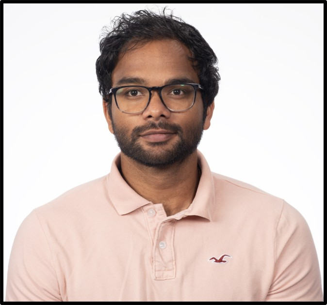

Aug 2026
Delivered a lightning talk and presented a poster at ModSim 2026, Seattle, WA
Presented “AI-Enabled ModSim for Distributed Computing: A Simulator-to-Surrogate Methodology for Scalable Performance Modeling.”
Performance Modelling · AI systems · Distributed Computing · Photonic Computing
Assistant Computational Scientist, Computational and Data Sciences Department,
Brookhaven National Laboratory · Upton, New York
My research focuses on understanding and improving computing systems across two complementary fronts. First, I evaluate emerging computing technologies like superconducting digital logic , photonics and in-memory computing , by developing analytical and AI-enabled modeling frameworks that characterize their performance, identify their potential, and enable exploration of the cross-layer design space spanning device, architecture, and applications. Second, I study existing large-scale distributed computing systems for scientific workflows, with an emphasis on improving their resilience and efficiency through better workload modeling, scheduling, and resource-management policies. Together, these efforts aim to build principled tools for understanding both future computing platforms and the complex systems that support large-scale science today.
Before joining Brookhaven National Laboratory, I completed my Ph.D. in Electrical Engineering at the UCAT Lab at the University of Kentucky in spring 2024, under the guidance of Dr. Ishan Thakkar. My doctoral research focused on the cross-layer design and optimization of photonic integrated-circuit-based AI accelerators.

Delivered a lightning talk and presented a poster at ModSim 2026, Seattle, WA
Presented “AI-Enabled ModSim for Distributed Computing: A Simulator-to-Surrogate Methodology for Scalable Performance Modeling.”
Paper accepted at IEEE eScience 2026, Naples, Italy
“CGSim: A Simulation Framework for Large Scale Distributed Computing Infrastructures with AI-Driven Applications” was accepted to the 22nd IEEE International Conference on eScience, to be held September 28 to October 2, 2026.
Presented a talk and poster on the REDWOOD project at the ASCR Computer Science PI Meeting, on behalf of Alexei Klimentov
Presented progress updates and future directions for the REDWOOD project.
Delivered a plenary talk at ATLAS Software and Computing Week, CERN, Geneva, Switzerland
Presented “Resilient Federated Workflows in a Heterogeneous Computing Environment: The REDWOOD Project.”
Delivered a talk and served as a panelist at a mini-symposium during PASC 2026, University of Bern, Switzerland
Presented “AI-Enabled Modeling, Simulation, and Optimization of Distributed Computing Systems.”
Invited talk at Optics-Laser 2026, 4th Innovations in Optics, Photonics, and Laser Engineering Conference, Boston, MA
Delivered an invited talk titled “Cross-Layer Design of Highly Scalable and Energy-Efficient AI Accelerator Systems Using Photonic Integrated Circuits” on 18 to 19 May 2026.
Promoted to Research Staff 3/Assistant Computational Scientist, at Brookhaven National Laboratory
Transitioned from Postdoctoral Research Associate to a research staff appointment in the Computing and Data Sciences Department, within the Systems, Architectures, and Advanced Technologies group.
Two connected threads: modeling complex computing systems, and designing alternative hardware for AI.
Discrete-event simulators reproduce the behavior of production grids, and learned surrogates stand in for them once a search needs thousands of rollouts. The goal is scheduling-policy search at facilities where a single real experiment costs weeks of grid time.
Microring and interferometric meshes can carry many computations at once across wavelength, time, spatial mode, and polarization. My work spans the device models, the mapping from workload to degrees of freedom, and the benchmarking that decides whether any of it beats a GPU.
Selected peer-reviewed work, followed by manuscripts currently under review or in preparation.
Predicting job turnaround time in large-scale distributed computing environments with graph neural networks
CGSim, a SimGrid-based discrete-event simulator for distributed scientific computing Best short paper
HEANA, a hybrid time-amplitude analog optical accelerator with flexible dataflows for energy-efficient CNN inference
SCONNA, a stochastic computing based optical accelerator for ultra-fast, energy-efficient inference of integer-quantized CNNs
Photonic reconfigurable accelerators for efficient inference of CNNs with mixed-sized tensors
PROTEUS, rule-based self-adaptation in photonic NoCs for loss-aware co-management of laser power and performance
Under review and in preparation
Current research efforts spanning scientific infrastructure, photonic computing, X-ray science, and system co-design.
A DOE ASCR project on modeling and optimizing scientific cyberinfrastructure. I build the simulation and surrogate stack, CGSim and TRASSE, and the training pipelines that cover 74 WLCG sites.
A Brookhaven LDRD on simulation-driven co-design of multidimensional photonic computing systems. I am a co-investigator leading benchmarking and evaluation against GPU, TPU, and single-degree-of-freedom photonic baselines.
An X-ray absorption spectroscopy platform for NSLS-II. I work on federated authentication, streaming beamline data, and the agentic layer that exposes surrogate models and materials databases as tools.
A gradient-descent design space exploration framework that searches parallelism strategy and accelerator geometry together, across CMOS and superconducting digital technologies.
Reviewing activity separated by journals and conferences for faster scanning.
| Journals |
|
|---|---|
| Conferences |
|
Selected recent presentations, separated from professional service.
Simulator-to-surrogate performance modeling for distributed computing
PASC 2026 · Bern
Grid simulation and surrogates for ATLAS
ATLAS Software and Computing Week · Plenary
AI-enabled ModSim for distributed computing
ModSim 2026